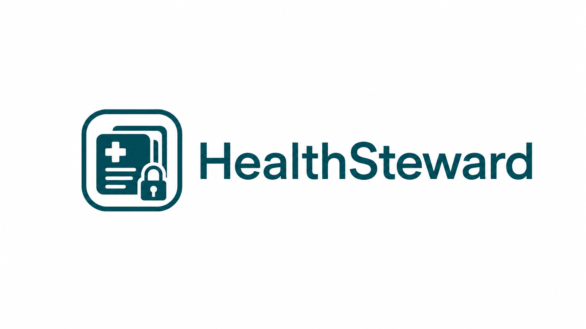

HealthSteward
AI care coordinator for patients navigating fragmented healthcare
Open-Source v1
Released August 2026 (v1.0.1)
Consumer App
Waitlist open
Story Behind the Project
Managing a chronic illness isn't just a medical challenge — it's a logistics one. I live with endometriosis, PCOS, adenomyosis, and several immune comorbidities, which means coordinating care across multiple specialists, tracking records from different systems, and walking into appointments without losing the thread of what was discussed three visits ago. Every tool I tried either ignored privacy, reduced my health to a checklist, or made me do the heavy lifting of connecting the dots myself.
I founded HealthSteward because nothing else existed that took both patient privacy and care complexity seriously at the same time.
About
HealthSteward is an AI care coordinator for patients navigating fragmented healthcare (e.g. patients managing complex or chronic conditions across multiple providers). It currently exists in two forms: an open-source v1 that is available today, and a consumer app that is still in development.
My Role
Founder, designer, and developer. I defined the problem, designed the architecture, and built the full stack end to end, from the FastAPI backend and local LLM integration to the React frontend and PII redaction pipeline, in collaboration with Claude Code.
Open-Source v1
Everything in this panel describes the open-source v1, not the consumer app.
Released in August 2026 under GPLv3 (latest: v1.0.1). It consolidates fragmented records, processes after-visit summaries, tracks action items, and generates personalized visit preparation. It uses a local-first architecture: sensitive processing stays on-device by default, and external model calls are opt-in and happen only after redaction.
Key Features
- AI-powered visit prep via an agentic tool-use loop — runs fully local on Ollama by default, with Claude API or any OpenAI-compatible provider as opt-ins; falls back to single-shot generation if the loop doesn't converge
- Local PDF parsing of after-visit summaries via Ollama with qwen2.5:7b, using targeted LLM calls only for unstructured sections — no cloud required
- PHI redaction before any external model call: deterministic field replacement for structured fields and a rule-based pipeline for free text, with no LLM involved; shipped regex-only for bounded, auditable behavior
- Multi-provider record consolidation with condition and medication tracking
- Needs Attention panel: four automated nudge types (visit prep missing, no after-visit summary uploaded, past-due appointments, adverse vital-sign trends) that surface gaps in care without the patient having to ask
- Deterministic post-generation guardrail that strips unsupported claims from visit-prep output, reducing the judge-estimated unsupported-claim rate from 21.6% to 1.1% on the development set
Evaluation
- Paper describing the architecture, “HealthSteward: A Local-First Agentic Architecture for Patient-Side Care Coordination,” is under review at the IEEE Journal of Biomedical and Health Informatics
- Evaluated on synthetic fixtures and three real after-visit summaries: 100% redaction precision (74–94% recall, 187 cases), exact structured-field extraction across all evaluated documents, and a 4.5% mean LLM-judge-estimated unsupported-claim rate on a 30-case, 15-specialty set
- Local visit preparation in a mean of 16.3 seconds on consumer hardware (Apple M3, 8 GB RAM)
- Independent pilot review of 30 outputs by nine reviewers; 153-test regression suite
Proof of concept: not yet clinically validated or tested with real patients.
Technologies
Consumer App
A consumer app is in development, and the waitlist is open. I'm also looking to connect with collaborators, clinicians, and investors; get in touch.